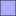

<!doctype html>
<html lang="en">
    <head>
        <meta charset="utf-8">
        <meta http-equiv="X-UA-Compatible" content="IE=edge">
        <meta name="viewport" content="initial-scale=1,user-scalable=no,maximum-scale=1,width=device-width">
        <meta name="mobile-web-app-capable" content="yes">
        <meta name="apple-mobile-web-app-capable" content="yes">
        <link rel="stylesheet" href="css/leaflet.css">
        <link rel="stylesheet" href="css/L.Control.Layers.Tree.css">
        <link rel="stylesheet" href="css/qgis2web.css">
        <link rel="stylesheet" href="css/fontawesome-all.min.css">
        <link rel="stylesheet" href="css/leaflet-measure.css">
        <style>
        html, body, #map {
            width: 100%;
            height: 100%;
            padding: 0;
            margin: 0;
        }
        </style>
        <title>LoRaWAN Gateway Viewsheds</title>
    </head>
    <body>
        <div id="map">
        </div>
        <script src="js/qgis2web_expressions.js"></script>
        <script src="js/leaflet.js"></script>
        <script src="js/L.Control.Layers.Tree.min.js"></script>
        <script src="js/leaflet.rotatedMarker.js"></script>
        <script src="js/leaflet.pattern.js"></script>
        <script src="js/leaflet-hash.js"></script>
        <script src="js/Autolinker.min.js"></script>
        <script src="js/rbush.min.js"></script>
        <script src="js/labelgun.min.js"></script>
        <script src="js/labels.js"></script>
        <script src="js/leaflet-measure.js"></script>
        <script src="data/Kattakada_gp_1.js"></script>
        <script src="data/Kalippara_2.js"></script>
        <script src="data/Kulathottumala_3.js"></script>
        <script src="data/KSEBBuildingKattakada_4.js"></script>
        <script src="data/Viewshed_shasthampara_5.js"></script>
        <script src="data/arg_locations_6.js"></script>
        <script src="data/aws_locations_7.js"></script>
        <script src="data/gateway_locations_8.js"></script>
        <script>
        var map = L.map('map', {
            zoomControl:false, maxZoom:28, minZoom:1
        }).fitBounds([[8.422821457572686,76.97305839132913],[8.566547618841165,77.19653057319938]]);
        var hash = new L.Hash(map);
        map.attributionControl.setPrefix('<a href="https://github.com/tomchadwin/qgis2web" target="_blank">qgis2web</a> &middot; <a href="https://leafletjs.com" title="A JS library for interactive maps">Leaflet</a> &middot; <a href="https://qgis.org">QGIS</a>');
        var autolinker = new Autolinker({truncate: {length: 30, location: 'smart'}});
        // remove popup's row if "visible-with-data"
        function removeEmptyRowsFromPopupContent(content, feature) {
         var tempDiv = document.createElement('div');
         tempDiv.innerHTML = content;
         var rows = tempDiv.querySelectorAll('tr');
         for (var i = 0; i < rows.length; i++) {
             var td = rows[i].querySelector('td.visible-with-data');
             var key = td ? td.id : '';
             if (td && td.classList.contains('visible-with-data') && feature.properties[key] == null) {
                 rows[i].parentNode.removeChild(rows[i]);
             }
         }
         return tempDiv.innerHTML;
        }
        // add class to format popup if it contains media
		function addClassToPopupIfMedia(content, popup) {
			var tempDiv = document.createElement('div');
			tempDiv.innerHTML = content;
			if (tempDiv.querySelector('td img')) {
				popup._contentNode.classList.add('media');
					// Delay to force the redraw
					setTimeout(function() {
						popup.update();
					}, 10);
			} else {
				popup._contentNode.classList.remove('media');
			}
		}
        var title = new L.Control({'position':'topleft'});
        title.onAdd = function (map) {
            this._div = L.DomUtil.create('div', 'info');
            this.update();
            return this._div;
        };
        title.update = function () {
            this._div.innerHTML = '<h2>LoRaWAN Gateway Viewsheds</h2>';
        };
        title.addTo(map);
        var abstract = new L.Control({'position':'bottomright'});
        abstract.onAdd = function (map) {
            this._div = L.DomUtil.create('div',
            'leaflet-control abstract');
            this._div.id = 'abstract'
                this._div.setAttribute("onmouseenter", "abstract.show()");
                this._div.setAttribute("onmouseleave", "abstract.hide()");
                this.hide();
                return this._div;
            };
            abstract.hide = function () {
                this._div.classList.remove("abstractUncollapsed");
                this._div.classList.add("abstract");
                this._div.innerHTML = 'i'
            }
            abstract.show = function () {
                this._div.classList.remove("abstract");
                this._div.classList.add("abstractUncollapsed");
                this._div.innerHTML = 'Explore the cutting-edge deployment of LoRaWAN gateways, Automatic Weather Stations (AWS), and Automatic Rain Gauges (ARG) in Kattakada Panchayat, brought to life by ICFOSS! This dynamic map showcases the extensive viewsheds of LoRaWAN gateways, highlighting the wide reach of the wireless sensor networks. These networks seamlessly collect and transmit real-time data from AWS and ARG devices, providing key insights into local weather patterns and rainfall. Dive into the spatial distribution of these smart devices, which are transforming environmental monitoring and helping drive data-driven decisions for sustainable agriculture and climate resilience.<br />To view the real-time data: https://visualize.openiot.in/';
        };
        abstract.addTo(map);
        var zoomControl = L.control.zoom({
            position: 'topleft'
        }).addTo(map);
        var measureControl = new L.Control.Measure({
            position: 'topleft',
            primaryLengthUnit: 'meters',
            secondaryLengthUnit: 'kilometers',
            primaryAreaUnit: 'sqmeters',
            secondaryAreaUnit: 'hectares'
        });
        measureControl.addTo(map);
        document.getElementsByClassName('leaflet-control-measure-toggle')[0].innerHTML = '';
        document.getElementsByClassName('leaflet-control-measure-toggle')[0].className += ' fas fa-ruler';
        var bounds_group = new L.featureGroup([]);
        function setBounds() {
        }
        map.createPane('pane_OSMStandard_0');
        map.getPane('pane_OSMStandard_0').style.zIndex = 400;
        var layer_OSMStandard_0 = L.tileLayer('http://tile.openstreetmap.org/{z}/{x}/{y}.png', {
            pane: 'pane_OSMStandard_0',
            opacity: 1.0,
            attribution: '<a href="https://www.openstreetmap.org/copyright">© OpenStreetMap contributors, CC-BY-SA</a>',
            minZoom: 1,
            maxZoom: 28,
            minNativeZoom: 0,
            maxNativeZoom: 19
        });
        layer_OSMStandard_0;
        map.addLayer(layer_OSMStandard_0);
        function pop_Kattakada_gp_1(feature, layer) {
            var popupContent = '<table>\
                    <tr>\
                        <td colspan="2">' + (feature.properties['DISTRICT'] !== null ? autolinker.link(feature.properties['DISTRICT'].toLocaleString()) : '') + '</td>\
                    </tr>\
                    <tr>\
                        <td colspan="2">' + (feature.properties['LSGD'] !== null ? autolinker.link(feature.properties['LSGD'].toLocaleString()) : '') + '</td>\
                    </tr>\
                    <tr>\
                        <td colspan="2">' + (feature.properties['BLOCK'] !== null ? autolinker.link(feature.properties['BLOCK'].toLocaleString()) : '') + '</td>\
                    </tr>\
                    <tr>\
                        <td colspan="2">' + (feature.properties['State'] !== null ? autolinker.link(feature.properties['State'].toLocaleString()) : '') + '</td>\
                    </tr>\
                </table>';
            var content = removeEmptyRowsFromPopupContent(popupContent, feature);
			layer.on('popupopen', function(e) {
				addClassToPopupIfMedia(content, e.popup);
			});
			layer.bindPopup(content, { maxHeight: 400 });
        }

        function style_Kattakada_gp_1_0() {
            return {
                pane: 'pane_Kattakada_gp_1',
                opacity: 1,
                color: 'rgba(0,0,0,1.0)',
                dashArray: '',
                lineCap: 'square',
                lineJoin: 'bevel',
                weight: 2.0,
                fillOpacity: 0,
                interactive: false,
            }
        }
        map.createPane('pane_Kattakada_gp_1');
        map.getPane('pane_Kattakada_gp_1').style.zIndex = 401;
        map.getPane('pane_Kattakada_gp_1').style['mix-blend-mode'] = 'normal';
        var layer_Kattakada_gp_1 = new L.geoJson(json_Kattakada_gp_1, {
            attribution: '',
            interactive: false,
            dataVar: 'json_Kattakada_gp_1',
            layerName: 'layer_Kattakada_gp_1',
            pane: 'pane_Kattakada_gp_1',
            onEachFeature: pop_Kattakada_gp_1,
            style: style_Kattakada_gp_1_0,
        });
        bounds_group.addLayer(layer_Kattakada_gp_1);
        map.addLayer(layer_Kattakada_gp_1);
        function pop_Kalippara_2(feature, layer) {
            var popupContent = '<table>\
                    <tr>\
                        <td colspan="2">' + (feature.properties['VALUE'] !== null ? autolinker.link(feature.properties['VALUE'].toLocaleString()) : '') + '</td>\
                    </tr>\
                </table>';
            var content = removeEmptyRowsFromPopupContent(popupContent, feature);
			layer.on('popupopen', function(e) {
				addClassToPopupIfMedia(content, e.popup);
			});
			layer.bindPopup(content, { maxHeight: 400 });
        }

        function style_Kalippara_2_0() {
            return {
                pane: 'pane_Kalippara_2',
                opacity: 1,
                color: 'rgba(35,35,35,1.0)',
                dashArray: '',
                lineCap: 'butt',
                lineJoin: 'miter',
                weight: 1.0, 
                fill: true,
                fillOpacity: 1,
                fillColor: 'rgba(0,0,255,0.32941176470588235)',
                interactive: false,
            }
        }
        map.createPane('pane_Kalippara_2');
        map.getPane('pane_Kalippara_2').style.zIndex = 402;
        map.getPane('pane_Kalippara_2').style['mix-blend-mode'] = 'normal';
        var layer_Kalippara_2 = new L.geoJson(json_Kalippara_2, {
            attribution: '',
            interactive: false,
            dataVar: 'json_Kalippara_2',
            layerName: 'layer_Kalippara_2',
            pane: 'pane_Kalippara_2',
            onEachFeature: pop_Kalippara_2,
            style: style_Kalippara_2_0,
        });
        bounds_group.addLayer(layer_Kalippara_2);
        map.addLayer(layer_Kalippara_2);
        function pop_Kulathottumala_3(feature, layer) {
            var popupContent = '<table>\
                    <tr>\
                        <td colspan="2">' + (feature.properties['VALUE'] !== null ? autolinker.link(feature.properties['VALUE'].toLocaleString()) : '') + '</td>\
                    </tr>\
                </table>';
            var content = removeEmptyRowsFromPopupContent(popupContent, feature);
			layer.on('popupopen', function(e) {
				addClassToPopupIfMedia(content, e.popup);
			});
			layer.bindPopup(content, { maxHeight: 400 });
        }

        function style_Kulathottumala_3_0() {
            return {
                pane: 'pane_Kulathottumala_3',
                opacity: 1,
                color: 'rgba(35,35,35,1.0)',
                dashArray: '',
                lineCap: 'butt',
                lineJoin: 'miter',
                weight: 1.0, 
                fill: true,
                fillOpacity: 1,
                fillColor: 'rgba(255,166,1,0.32941176470588235)',
                interactive: false,
            }
        }
        map.createPane('pane_Kulathottumala_3');
        map.getPane('pane_Kulathottumala_3').style.zIndex = 403;
        map.getPane('pane_Kulathottumala_3').style['mix-blend-mode'] = 'normal';
        var layer_Kulathottumala_3 = new L.geoJson(json_Kulathottumala_3, {
            attribution: '',
            interactive: false,
            dataVar: 'json_Kulathottumala_3',
            layerName: 'layer_Kulathottumala_3',
            pane: 'pane_Kulathottumala_3',
            onEachFeature: pop_Kulathottumala_3,
            style: style_Kulathottumala_3_0,
        });
        bounds_group.addLayer(layer_Kulathottumala_3);
        map.addLayer(layer_Kulathottumala_3);
        function pop_KSEBBuildingKattakada_4(feature, layer) {
            var popupContent = '<table>\
                    <tr>\
                        <td colspan="2">' + (feature.properties['VALUE'] !== null ? autolinker.link(feature.properties['VALUE'].toLocaleString()) : '') + '</td>\
                    </tr>\
                </table>';
            var content = removeEmptyRowsFromPopupContent(popupContent, feature);
			layer.on('popupopen', function(e) {
				addClassToPopupIfMedia(content, e.popup);
			});
			layer.bindPopup(content, { maxHeight: 400 });
        }

        function style_KSEBBuildingKattakada_4_0() {
            return {
                pane: 'pane_KSEBBuildingKattakada_4',
                opacity: 1,
                color: 'rgba(35,35,35,1.0)',
                dashArray: '',
                lineCap: 'butt',
                lineJoin: 'miter',
                weight: 1.0, 
                fill: true,
                fillOpacity: 1,
                fillColor: 'rgba(0,255,0,0.32941176470588235)',
                interactive: false,
            }
        }
        map.createPane('pane_KSEBBuildingKattakada_4');
        map.getPane('pane_KSEBBuildingKattakada_4').style.zIndex = 404;
        map.getPane('pane_KSEBBuildingKattakada_4').style['mix-blend-mode'] = 'normal';
        var layer_KSEBBuildingKattakada_4 = new L.geoJson(json_KSEBBuildingKattakada_4, {
            attribution: '',
            interactive: false,
            dataVar: 'json_KSEBBuildingKattakada_4',
            layerName: 'layer_KSEBBuildingKattakada_4',
            pane: 'pane_KSEBBuildingKattakada_4',
            onEachFeature: pop_KSEBBuildingKattakada_4,
            style: style_KSEBBuildingKattakada_4_0,
        });
        bounds_group.addLayer(layer_KSEBBuildingKattakada_4);
        map.addLayer(layer_KSEBBuildingKattakada_4);
        function pop_Viewshed_shasthampara_5(feature, layer) {
            var popupContent = '<table>\
                    <tr>\
                        <td colspan="2">' + (feature.properties['VALUE'] !== null ? autolinker.link(feature.properties['VALUE'].toLocaleString()) : '') + '</td>\
                    </tr>\
                </table>';
            var content = removeEmptyRowsFromPopupContent(popupContent, feature);
			layer.on('popupopen', function(e) {
				addClassToPopupIfMedia(content, e.popup);
			});
			layer.bindPopup(content, { maxHeight: 400 });
        }

        function style_Viewshed_shasthampara_5_0() {
            return {
                pane: 'pane_Viewshed_shasthampara_5',
                opacity: 1,
                color: 'rgba(35,35,35,1.0)',
                dashArray: '',
                lineCap: 'butt',
                lineJoin: 'miter',
                weight: 1.0, 
                fill: true,
                fillOpacity: 1,
                fillColor: 'rgba(255,0,0,0.32941176470588235)',
                interactive: false,
            }
        }
        map.createPane('pane_Viewshed_shasthampara_5');
        map.getPane('pane_Viewshed_shasthampara_5').style.zIndex = 405;
        map.getPane('pane_Viewshed_shasthampara_5').style['mix-blend-mode'] = 'normal';
        var layer_Viewshed_shasthampara_5 = new L.geoJson(json_Viewshed_shasthampara_5, {
            attribution: '',
            interactive: false,
            dataVar: 'json_Viewshed_shasthampara_5',
            layerName: 'layer_Viewshed_shasthampara_5',
            pane: 'pane_Viewshed_shasthampara_5',
            onEachFeature: pop_Viewshed_shasthampara_5,
            style: style_Viewshed_shasthampara_5_0,
        });
        bounds_group.addLayer(layer_Viewshed_shasthampara_5);
        map.addLayer(layer_Viewshed_shasthampara_5);
        function pop_arg_locations_6(feature, layer) {
            var popupContent = '<table>\
                    <tr>\
                        <td colspan="2">' + (feature.properties['Location'] !== null ? autolinker.link(feature.properties['Location'].toLocaleString()) : '') + '</td>\
                    </tr>\
                    <tr>\
                        <td colspan="2">' + (feature.properties['Latitude'] !== null ? autolinker.link(feature.properties['Latitude'].toLocaleString()) : '') + '</td>\
                    </tr>\
                    <tr>\
                        <td colspan="2">' + (feature.properties['Longitude'] !== null ? autolinker.link(feature.properties['Longitude'].toLocaleString()) : '') + '</td>\
                    </tr>\
                </table>';
            var content = removeEmptyRowsFromPopupContent(popupContent, feature);
			layer.on('popupopen', function(e) {
				addClassToPopupIfMedia(content, e.popup);
			});
			layer.bindPopup(content, { maxHeight: 400 });
        }

        function style_arg_locations_6_0() {
            return {
                pane: 'pane_arg_locations_6',
        rotationAngle: 0.0,
        rotationOrigin: 'center center',
        icon: L.icon({
            iconUrl: 'markers/arg_locations_6.svg',
            iconSize: [25.84, 25.84]
        }),
                interactive: true,
            }
        }
        map.createPane('pane_arg_locations_6');
        map.getPane('pane_arg_locations_6').style.zIndex = 406;
        map.getPane('pane_arg_locations_6').style['mix-blend-mode'] = 'normal';
        var layer_arg_locations_6 = new L.geoJson(json_arg_locations_6, {
            attribution: '',
            interactive: true,
            dataVar: 'json_arg_locations_6',
            layerName: 'layer_arg_locations_6',
            pane: 'pane_arg_locations_6',
            onEachFeature: pop_arg_locations_6,
            pointToLayer: function (feature, latlng) {
                var context = {
                    feature: feature,
                    variables: {}
                };
                return L.marker(latlng, style_arg_locations_6_0(feature));
            },
        });
        bounds_group.addLayer(layer_arg_locations_6);
        map.addLayer(layer_arg_locations_6);
        function pop_aws_locations_7(feature, layer) {
            var popupContent = '<table>\
                    <tr>\
                        <td colspan="2">' + (feature.properties['Place'] !== null ? autolinker.link(feature.properties['Place'].toLocaleString()) : '') + '</td>\
                    </tr>\
                    <tr>\
                        <td colspan="2">' + (feature.properties['Latitude'] !== null ? autolinker.link(feature.properties['Latitude'].toLocaleString()) : '') + '</td>\
                    </tr>\
                    <tr>\
                        <td colspan="2">' + (feature.properties['Longitude'] !== null ? autolinker.link(feature.properties['Longitude'].toLocaleString()) : '') + '</td>\
                    </tr>\
                </table>';
            var content = removeEmptyRowsFromPopupContent(popupContent, feature);
			layer.on('popupopen', function(e) {
				addClassToPopupIfMedia(content, e.popup);
			});
			layer.bindPopup(content, { maxHeight: 400 });
        }

        function style_aws_locations_7_0() {
            return {
                pane: 'pane_aws_locations_7',
        rotationAngle: 0.0,
        rotationOrigin: 'center center',
        icon: L.icon({
            iconUrl: 'markers/aws_locations_7.svg',
            iconSize: [57.76, 57.76]
        }),
                interactive: true,
            }
        }
        map.createPane('pane_aws_locations_7');
        map.getPane('pane_aws_locations_7').style.zIndex = 407;
        map.getPane('pane_aws_locations_7').style['mix-blend-mode'] = 'normal';
        var layer_aws_locations_7 = new L.geoJson(json_aws_locations_7, {
            attribution: '',
            interactive: true,
            dataVar: 'json_aws_locations_7',
            layerName: 'layer_aws_locations_7',
            pane: 'pane_aws_locations_7',
            onEachFeature: pop_aws_locations_7,
            pointToLayer: function (feature, latlng) {
                var context = {
                    feature: feature,
                    variables: {}
                };
                return L.marker(latlng, style_aws_locations_7_0(feature));
            },
        });
        bounds_group.addLayer(layer_aws_locations_7);
        map.addLayer(layer_aws_locations_7);
        function pop_gateway_locations_8(feature, layer) {
            var popupContent = '<table>\
                    <tr>\
                        <td colspan="2">' + (feature.properties['Location'] !== null ? autolinker.link(feature.properties['Location'].toLocaleString()) : '') + '</td>\
                    </tr>\
                    <tr>\
                        <td colspan="2">' + (feature.properties['Latitude'] !== null ? autolinker.link(feature.properties['Latitude'].toLocaleString()) : '') + '</td>\
                    </tr>\
                    <tr>\
                        <td colspan="2">' + (feature.properties['Longitude'] !== null ? autolinker.link(feature.properties['Longitude'].toLocaleString()) : '') + '</td>\
                    </tr>\
                </table>';
            var content = removeEmptyRowsFromPopupContent(popupContent, feature);
			layer.on('popupopen', function(e) {
				addClassToPopupIfMedia(content, e.popup);
			});
			layer.bindPopup(content, { maxHeight: 400 });
        }

        function style_gateway_locations_8_0() {
            return {
                pane: 'pane_gateway_locations_8',
        rotationAngle: 0.0,
        rotationOrigin: 'center center',
        icon: L.icon({
            iconUrl: 'markers/gateway_locations_8.svg',
            iconSize: [45.599999999999994, 45.599999999999994]
        }),
                interactive: true,
            }
        }
        map.createPane('pane_gateway_locations_8');
        map.getPane('pane_gateway_locations_8').style.zIndex = 408;
        map.getPane('pane_gateway_locations_8').style['mix-blend-mode'] = 'normal';
        var layer_gateway_locations_8 = new L.geoJson(json_gateway_locations_8, {
            attribution: '',
            interactive: true,
            dataVar: 'json_gateway_locations_8',
            layerName: 'layer_gateway_locations_8',
            pane: 'pane_gateway_locations_8',
            onEachFeature: pop_gateway_locations_8,
            pointToLayer: function (feature, latlng) {
                var context = {
                    feature: feature,
                    variables: {}
                };
                return L.marker(latlng, style_gateway_locations_8_0(feature));
            },
        });
        bounds_group.addLayer(layer_gateway_locations_8);
        map.addLayer(layer_gateway_locations_8);
        var baseMaps = {};
        var overlaysTree = [
            {label: ' gateway_locations', layer: layer_gateway_locations_8},
            {label: ' aws_locations', layer: layer_aws_locations_7},
            {label: ' arg_locations', layer: layer_arg_locations_6},
            {label: ' Viewshed_shasthampara', layer: layer_Viewshed_shasthampara_5},
            {label: ' KSEB Building, Kattakada', layer: layer_KSEBBuildingKattakada_4},
            {label: ' Kulathottumala', layer: layer_Kulathottumala_3},
            {label: ' Kalippara', layer: layer_Kalippara_2},
            {label: ' Kattakada_gp', layer: layer_Kattakada_gp_1},
            {label: "OSM Standard", layer: layer_OSMStandard_0},]
        var lay = L.control.layers.tree(null, overlaysTree,{
            //namedToggle: true,
            //selectorBack: false,
            //closedSymbol: '&#8862; &#x1f5c0;',
            //openedSymbol: '&#8863; &#x1f5c1;',
            //collapseAll: 'Collapse all',
            //expandAll: 'Expand all',
            collapsed: true,
        });
        lay.addTo(map);
        setBounds();
        var i = 0;
        layer_arg_locations_6.eachLayer(function(layer) {
            var context = {
                feature: layer.feature,
                variables: {}
            };
            layer.bindTooltip((layer.feature.properties['Location'] !== null?String('<div style="color: #323232; font-size: 10pt; font-family: \'Liberation Sans\', sans-serif;">' + layer.feature.properties['Location']) + '</div>':''), {permanent: true, offset: [-0, -16], className: 'css_arg_locations_6'});
            labels.push(layer);
            totalMarkers += 1;
              layer.added = true;
              addLabel(layer, i);
              i++;
        });
        var i = 0;
        layer_aws_locations_7.eachLayer(function(layer) {
            var context = {
                feature: layer.feature,
                variables: {}
            };
            layer.bindTooltip((layer.feature.properties['Place'] !== null?String('<div style="color: #323232; font-size: 10pt; font-family: \'Liberation Sans\', sans-serif;">' + layer.feature.properties['Place']) + '</div>':''), {permanent: true, offset: [-0, -16], className: 'css_aws_locations_7'});
            labels.push(layer);
            totalMarkers += 1;
              layer.added = true;
              addLabel(layer, i);
              i++;
        });
        var i = 0;
        layer_gateway_locations_8.eachLayer(function(layer) {
            var context = {
                feature: layer.feature,
                variables: {}
            };
            layer.bindTooltip((layer.feature.properties['Location'] !== null?String('<div style="color: #323232; font-size: 10pt; font-family: \'Liberation Sans\', sans-serif;">' + layer.feature.properties['Location']) + '</div>':''), {permanent: true, offset: [-0, -16], className: 'css_gateway_locations_8'});
            labels.push(layer);
            totalMarkers += 1;
              layer.added = true;
              addLabel(layer, i);
              i++;
        });
        resetLabels([layer_arg_locations_6,layer_aws_locations_7,layer_gateway_locations_8]);
        map.on("zoomend", function(){
            resetLabels([layer_arg_locations_6,layer_aws_locations_7,layer_gateway_locations_8]);
        });
        map.on("layeradd", function(){
            resetLabels([layer_arg_locations_6,layer_aws_locations_7,layer_gateway_locations_8]);
        });
        map.on("layerremove", function(){
            resetLabels([layer_arg_locations_6,layer_aws_locations_7,layer_gateway_locations_8]);
        });
        </script>
    </body>
</html>
